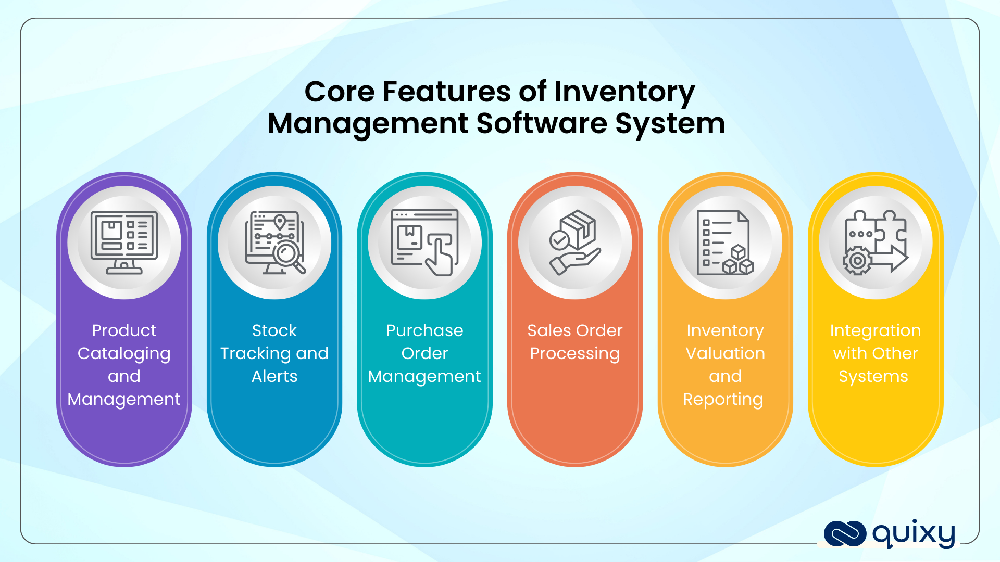
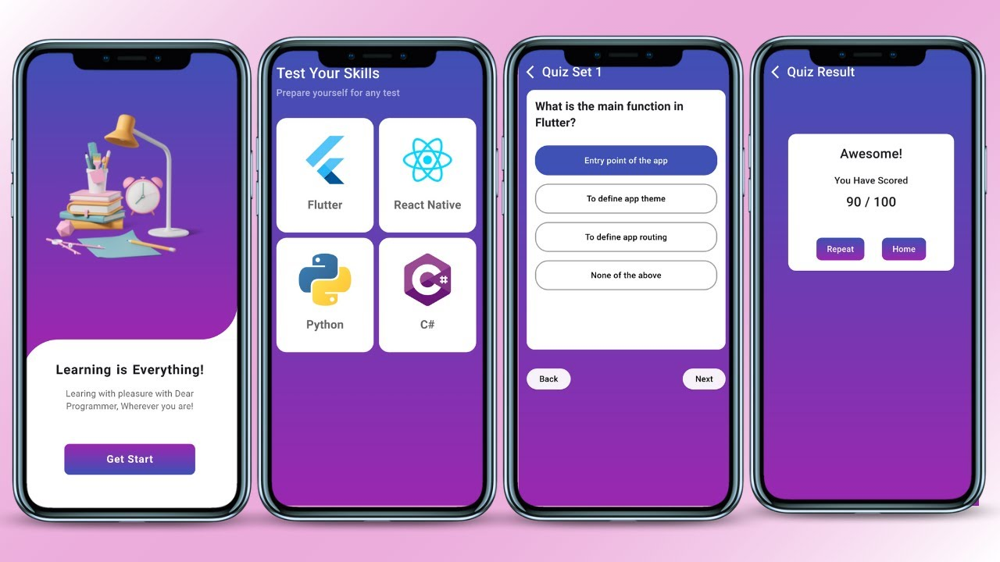

About Me
Hello! I'm Javier, Ralph Joshua F., an aspiring web developer. I care about clean code, accessibility, and performance. This page demonstrates HTML + CSS best practices.
Projects
Project One
What it does:tracking products and alerts items when items are low.
What I Learn:Designing a database for storing product details and also implements CRUD Operations which could improve my back-end coding.
ViewProject Two
What it does: It let users takes quizzes,Automatically check Answers and also shows your score
What I learned:User Input Validation and Building interactive user interface with feedbacks.
ViewProject Three

What it does:Allows users to add, edit, mark as complete, or delete tasks for personal productivity.
What I learned: how to construct a structure of simple application and how to connect Frontend and Backend.
View